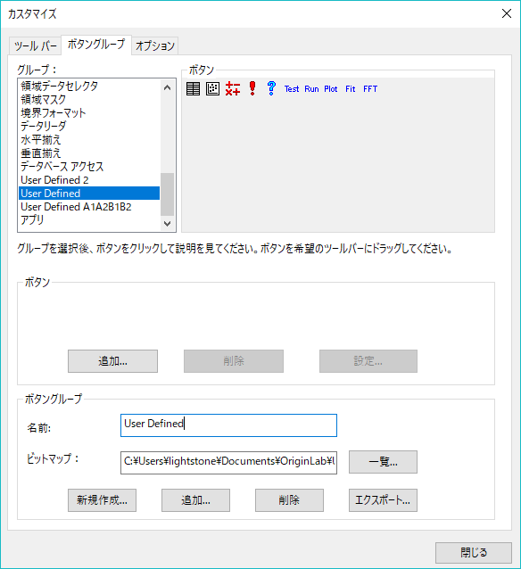

ツールバーボタンから
From-a-Toolbar-Button
LabTalkスクリプトファイルはOriginの ツールバーボタンからも起動できます。 LabTalkを使いましょうの章で、ツールバーのカスタムルーチンボタンの使用方法について説明しました。ここでは、その詳細について説明します。3つのファイルによってこれができます。
- ボタンの外観を定義するビットマップファイル。 Originが提供しているボタン または 自分自身で作成したボタンの一方を使用します。
- ユーザがボタンをクリックするときに実行されるLabTalkスクリプトファイル
- ボタンまたはボタングループについての情報が保存されるINI ファイル。 Originは、以下の手順に従うときにINIファイルを作成します。
ボタン自体を定義するビットマップファイル(BMP)を持っているものとします(作成することに関心があれば、 以下のステップがサンプルになっています。)
最初に、コードビルダ (Originの標準ツールバーの  を選択して開く) または他のテキストエディタを使って、LabTalkスクリプト (OGS) ファイルを開発します。 拡張子OGSを付けて保存します。 1つのスクリプトファイルをいくつかのセクションに分け、各セクションを異なるツールバーボタンにすることができます。
を選択して開く) または他のテキストエディタを使って、LabTalkスクリプト (OGS) ファイルを開発します。 拡張子OGSを付けて保存します。 1つのスクリプトファイルをいくつかのセクションに分け、各セクションを異なるツールバーボタンにすることができます。
Originツールバーのボタンを配置する
Originツールバーにボタンを配置するには、この手順を使います。
- Originで、表示：ツールバーを選び、ツールバーのカスタム化ダイアログを開きます。
- ボタングループタブをアクティブにします。
- ボタングループにある新規ボタンをクリックし、ボタングループの作成ダイアログを開きます。
- グループ名を入力します。
- この新しいグループに対するボタンの数を入力します。
- 参照ボタンをクリックし、ビットマップファイルの場所に移動します。このファイルは、ユーザフォルダに置いておくほうが良いでしょう。
- OKをクリックします。
- 名前を付けて保存ダイアログが開きます。ビットマップファイルと同じ名前を入力します。OKをクリックしてINIファイルを保存します。作成したグループがグループリストに追加され、ボタンが表示されます。
OPXファイルにエクスポートするカスタムボタングループを作成する時には、User Filesフォルダの中にサブフォルダを作成し、そこにボタングループの初期化ファイル、ビットマップファイル、スクリプトファイル、他のサポートファイルを保存することをお勧めします。他のOriginユーザが、そのOPXファイルをインストールする時に、User Filesフォルダ内に、同じサブフォルダが自動的に作成されます。そして、このサブフォルダ内に、カスタムボタングループに関するファイルがコピーされます。この方法でOriginサブフォルダを使用すれば、自分で作成したファイルとOriginのファイルを分けておくことができます。
LabTalkスクリプト(OGS) ファイルとボタンを合わせる
- ボタンをクリックして選択します。
- 設定ボタンをクリックし、ボタン設定ダイアログを開きます。
- 参照ボタンをクリックし、OGSファイルのある場所に移動します。
- OGSファイルのセクション名を、引数リストに引数入力します。
- ツールチップテキストボックスに簡単な説明を入力します。
- ステータスバーテキストボックスにステータスバーに出力するメッセージを入力します。
- OKをクリックします。
- ボタングループの各ボタンに対してこれらのステップを繰り返します。
- 初めのボタンをOriginのワークスペースにドラッグします。 ツールバーが作成されます。 これでほかのボタン全てをツールバーにドラッグできます。
Originで利用できるカスタムボタン
以下のダイアログは、Originのメインメニュー表示：ツールバーを選択して開くことができます。ボタングループタブで、ユーザ定義グループを選びます。

これらを使って始めるためにOriginツールバーにこれらのボタンをドラッグします。 上記の手順を使い、与えられたボタンとスクリプトを関連付けします。
新しいボタン用のビットマップファイルを作成する
ビットマップファイルを作成するには、Windowsのペイントのようなビットマップ画像(BMP)を編集し、保存できるプログラムを使用します。 以下のステップは始める際の手助けとなります。
- 組込みのユーザ定義のツールバーのビットマップを使うことは最初に始めるのに適しています。 Windowsペイントで、ファイル:開くを選び、User Filesフォルダを使って、 Userdef.bmpを選択します。
- 画像サイズをセットします。 イメージ: サイズ変更と傾斜を選びます。画像の高さは16のままである必要があるので変更しないでください。 各ボタンは16x16ピクセルになります。 ツールバーに2つだけボタンが必要なら、幅を32に変更します。 幅は常に16掛けるボタンの数で、最大10個のボタン分、つまり160ピクセルです。
- 表示:ズーム:カスタム:800%を選びます。 これでイメージは操作するのに十分大きくなりました。
- 表示:ズーム:グリッド表示を選択します。 これでピクセルごとに色を付けることができます。 各ボタンの外観をデザインします。
- ファイル:名前を付けて保存を選び、新しいファイル名を入力し、ファイルの種類 は 16色ビットマップにします。